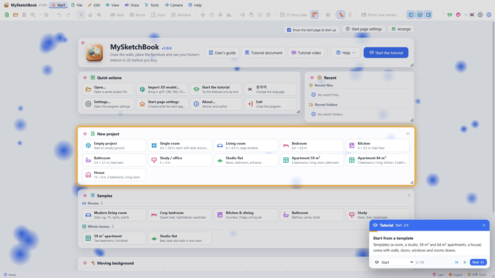
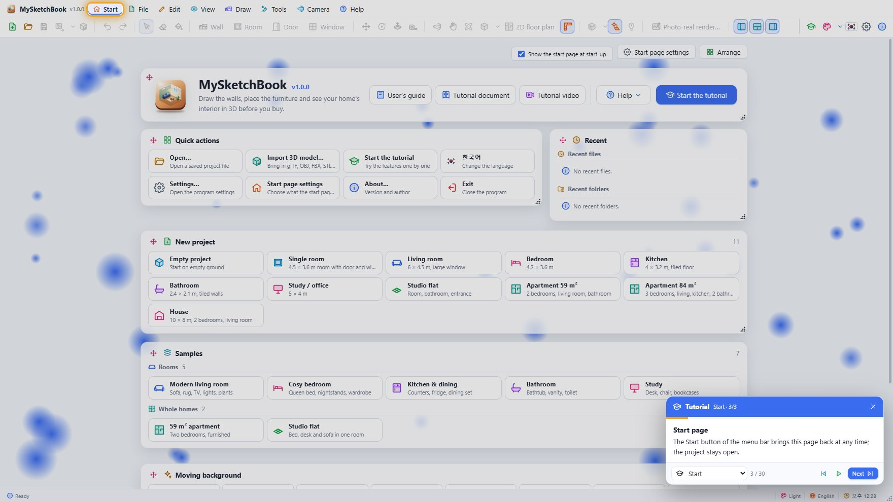
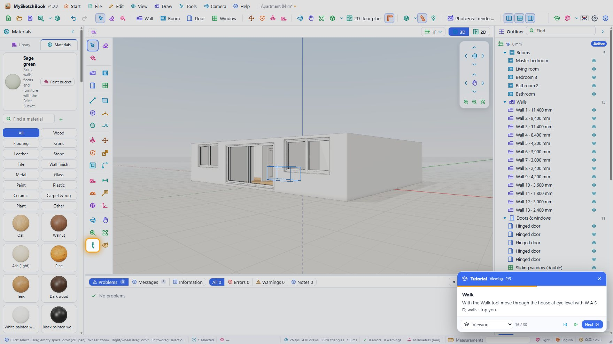
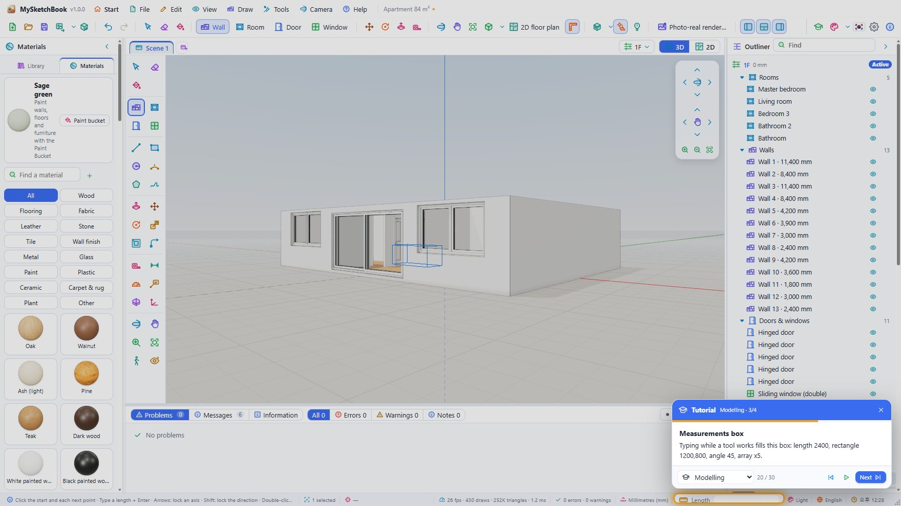
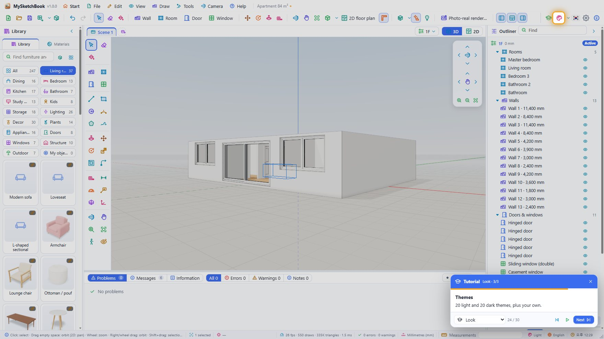
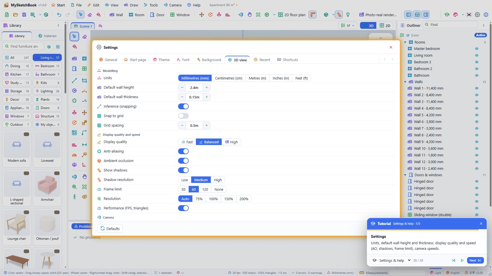
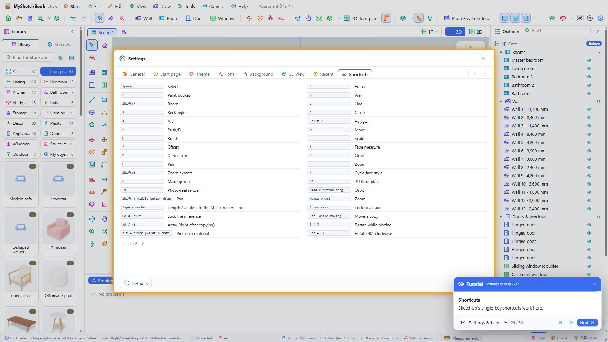
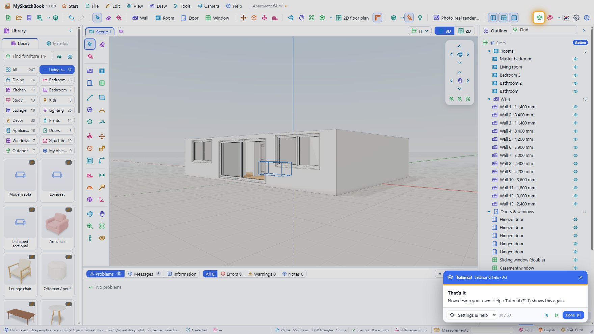

MySketchBook tutorial
The in-app Tutorial, chapter by chapter and step by step. It has 8 chapters and 30 steps and shows every feature by driving the real program. The pictures were taken while the tutorial ran in the web version (npm run tutorial:docs takes them again).
Running the tutorial
- Start page › Start the tutorial, the Tutorial button at the right of the toolbar, Help › Tutorial or F11.
- In the card at the bottom right: Next / Previous step one step at a time, Auto play to the end, the chapter list to jump to a chapter, ✕ or Esc to stop at any time. Drag the card by its header to move it.
- The tutorial works in a project of its own (the 84 m² apartment template). Your open project comes back when it ends, and the settings it changes (theme, language, panels …) are put back.
- While it runs, popups (menus, Settings, the render window) open inside the main window instead of their own windows.
- Every feature is explained in detail in the User's guide.
Contents
1. Start
1. Welcome to MySketchBook
Draw walls, place furniture and design your home interior in 3D. Press Next to see each feature.

2. Start from a template
Templates (a room, a studio, 59 m² and 84 m² apartments, a house) come with walls, doors, windows and rooms drawn.

3. Start page
The Start button of the menu bar brings this page back at any time; the project stays open.

2. Building
4. The workspace
Library and materials on the left, the 3D view in the middle, the outliner (levels, rooms, walls, furniture) and properties on the right.

5. Tool palette
Select, building, drawing, modifying, measuring and camera tools as in SketchUp. Single keys pick them too (W wall, R rectangle, P push/pull …).

6. Drawing walls
With the Wall tool click point after point. It snaps to endpoints, midpoints and axes; type a length and press Enter for an exact wall.

7. Making rooms
Click inside walls with the Room tool: the floor appears and its area (m², pyeong) is computed.

8. Doors and windows
Pick a door or window in the library and click on a wall: it cuts its opening. Change its size in the properties.

9. 2D floor plan
The 2D button (F4) shows the plan cut at 1.2 m. You can keep drawing and placing in it.

3. Furnishing
10. Furniture library
About 240 high-quality pieces of furniture and props in living, bedroom, kitchen, bath, lighting, plants … HQ marks photo-scanned models.

11. Placing
Click a card and then the floor, or drag it onto the view. Near a wall it backs against it; [ ] rotate.

12. Properties
Change the selected item's position, rotation, scale and its own options such as width, seats and fabric.

13. Materials
About 100 realistic materials: wood, fabric, leather, stone, tile, wall finishes … Picking one switches to the Paint Bucket.

14. Paint Bucket
Click a wall side, a floor or a part of furniture to paint it. Alt+click picks a material up.

4. Viewing
15. Navigating
Middle-drag orbits, Shift+middle pans, the wheel zooms towards the cursor. Standard views are on the toolbar.

16. Walk
With the Walk tool move through the house at eye level with W A S D; walls stop you.

17. Scenes
Save good viewpoints as scenes; their tabs bring them back.

5. Modelling
18. SketchUp-style modelling
Lines, rectangles and circles that close make faces; a line across a face splits it.

19. Push/Pull
Click a face and drag to give it depth; type a height and press Enter. Push through to the back to cut a hole.

20. Measurements box
Typing while a tool works fills this box: length 2400, rectangle 1200,800, angle 45, array x5.

21. Your own 3D models
Import glTF, OBJ, FBX, STL, DAE, 3DS or PLY: they join Library › My objects and are saved inside the project.

6. Look
22. Face styles
Switch between textured, shaded, white, X-ray, wireframe and hidden line; K cycles them.

23. Sun and shadows
Set the date, time and city: shadows follow the real sun.

24. Themes
20 light and 20 dark themes, plus your own.

7. Saving & output
25. Saving
One .msk file holds the project and every imported model.

26. Export
Export pictures (up to 8K), floor plans, glTF, OBJ, STL, PLY and USDZ.

27. Photo-real rendering
Path tracing makes photographic pictures; the progress window shows the time left and can cancel.

8. Settings & help
28. Settings
Units, default wall height and thickness, display quality and speed (AO, shadows, frame limit), camera speeds.

29. Shortcuts
SketchUp's single-key shortcuts work here.

30. That's it
Now design your own. Help › Tutorial (F11) shows this again.

Run the tutorial again any time from Help › Tutorial (F11). A recording of the whole tour plays from Help › Tutorial video (once made with npm run tutorial:video).